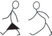

Kazi ya kufanya namba 5
Tembelea tukio lolote katika jamii yako linalohusisha upigaji wa ala za muziki au tafuta matukio yaliyorekodiwa katika vyanzo-mtandao na kisha fanya yafuatayo:
(a) Tazama ala za muziki zinazotumika;
(b) Andika ala ulizoziona kwa kuzigawa katika makundi yake; na
(c) Wasilisha kazi yako mbele ya darasa kwa mwongozo wa mwalimu.